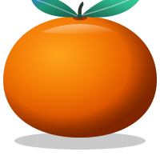
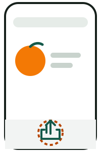
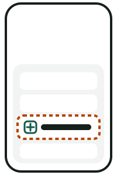
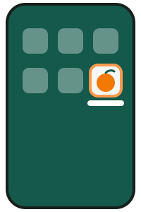

màndarínō
Il cinese per italiani, l'italiano per chi parla cinese.
为中文使用者学意大利语，为意大利人学中文。
Gratis, offline, senza pubblicità né account · 免费、离线、无广告、无需账号
Che cos'è
Un'app per studiare il cinese mandarino partendo dall'italiano, e l'italiano partendo dal cinese. Si apre nel browser e si installa sul telefono; dopo la prima apertura funziona senza rete. Nessun account, nessuna pubblicità, nessun dato raccolto: i progressi restano sul tuo telefono.
- 6385 parole HSK 3.0livelli 1-5 in sei capitoli, pinyin, toni e una frase d'esempio per ogni parola.
- Ripasso a intervallidieci parole al giorno, lette ad alta voce; un test di livello di pochi minuti all'inizio.
- Frasi e grammatica30 lezioni, dialoghi e un laboratorio che traduce solo quando è sicuro.
- Toni e scritturaorecchio ai toni, pronuncia con il microfono, ordine dei tratti.
Come installarla
Android
Scarica l'APK e permetti l'installazione da questa fonte quando il telefono lo chiede. L'app Android ha anche widget, scorciatoie e musica in secondo piano. Più avanti sarà anche negli store.
iPhone e iPad

Apri l'app in Safari e tocca Condividi.
Scegli Aggiungi alla schermata Home.
màndarínō è sulla schermata Home, anche senza rete.
Computer
Apri l'app in Chrome, Edge o Firefox. In Chrome ed Edge puoi installarla dal menu del browser.
Domande frequenti
È davvero gratis?
Sì, del tutto: niente pubblicità, niente abbonamenti, niente funzioni a pagamento. Chi vuole può sostenere il progetto, ma non sblocca nulla.
Serve internet?
Solo la prima volta, per scaricarla. Poi funziona offline; la musica si scarica al primo ascolto.
Dove finiscono i miei dati?
Restano sul tuo telefono. Nessun account, nessun server, nessuna statistica. Leggi la privacy.
Posso studiare su due dispositivi?
Sì: la sincronizzazione usa un file nel tuo cloud (Drive, OneDrive, Dropbox, iCloud) oppure dei QR da un telefono all'altro.
So già un po' di cinese: devo ricominciare da zero?
No: all'inizio un test di pochi minuti ti fa partire dal tuo livello, e puoi sempre cambiarlo.
Ho trovato un errore
Correggilo dall'app (tocca la parola, poi «Correggi o segnala»), oppure leggi come contribuire: non serve programmare.
这是什么
màndarínō 是一款学习应用：中文使用者用它学意大利语，意大利人用它学中文。它在浏览器中运行，也可以安装到手机上；第一次打开后不需要网络。没有账号，没有广告，不收集任何数据：学习进度只保存在你的手机上。
- 意大利语课程30 课、4780 个词、动词变位练习和意大利语句子检查。
- 间隔复习每天十个词；开始时有几分钟的水平测试，从合适的地方起步。
- 只属于你学习进度保存在手机上；同步使用你自己云端的文件或二维码。
怎么安装
安卓
下载 APK，手机询问时允许从此来源安装。以后也会上架应用商店。
iPhone 和 iPad
- 在 Safari 中打开应用，点分享。
- 选择添加到主屏幕。
- màndarínō 出现在主屏幕上，离线也能用。
电脑
在 Chrome、Edge 或 Firefox 中打开应用。
常见问题
真的免费吗？
完全免费：没有广告、没有订阅、没有付费功能。
需要网络吗？
只有第一次下载时需要。之后可以离线使用。
我的数据在哪里？
只在你的手机上。没有账号、服务器或统计。请看隐私说明。
我可以帮忙吗？
可以！我们特别需要母语为中文的朋友校对意大利语课程里的中文。不会编程也能帮忙：见如何参与。